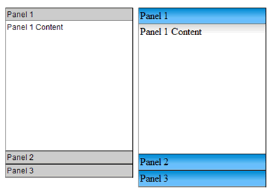

Widgets are a common feature of Ajax frameworks. While not technically Ajax, meaning they generally don’t use the XMLHTTP request object, widgets are called “Ajax” referring to next generation web UI. The Spry team is designing the framework in such a way that widgets are easy to understand and build. We hope to enable the community to start building and sharing their own widgets.
A widget is a block of HTML, CSS and JavaScript that encapsulates a piece of advanced user interface. Common widgets are accordions, trees and tabbed interfaces. These objects have been difficult to build, requiring advanced coding skills. The benefit of prebuilt widgets is that the difficult coding is taken care of and users can easily incorporate these advanced interface objects into their pages.
The Spry team, as a subset of the Dreamweaver team, has taken advantage of our insight and research into web page development and applied it to the Spry framework. We have developed a set of guiding principles in creating the Spry framework.
The benefits of the above 2 items is that Spry Widgets should be easy to edit. This model is familiar to designers and editing: To change the look and feel, simply change the CSS. To add a new accordion panel simply copy and paste an existing code block.
Many widgets are ‘disclosure’ objects, meaning that they hide and show content per user interactions. Examples of disclosure widgets are:
Other widgets embody common patterns in a discrete package:
It is easy to talk about code, but it’s even easier to understand by looking at code. Simple 3 panel accordion looks like:
<div id="Acc1" class="Accordion">
<div class="Panel">
<div class="Header">Panel Header 1</div>
<div class="Content">Panel 1 Content </div>
</div>
<div class="Panel">
<div class="Header">Panel Header 2</div>
<div class="Content">Panel 2 Content</div>
</div>
<div class="Panel">
<div class="Header">Panel Header 3</div>
<div class="Content">Panel 3 Content</div>
</div>
</div>
<script>
var acc1 = new Hanzo.Widget.Accordion("Acc1");
</script>
Using class names above, it is easy to figure out how to build an accordion. There is a:
The classes shown here are for clarity only. They are not required for functionality. That being said, CSS can be used to create accordions with very different styles. In the browser, the simply changing the ‘Header’ class code can give you these varieties:

There is a JavaScript object associated with a widget. It attaches behaviors and handles the user interaction. This JavaScript is kept in a external file.
It is critical to the usability of the widget that it be accessible when following established web navigation conventions. We can’t assume a mouse and therefore we take steps to ensure that all aspects of our widgets are accessible through the keyboard. In the accordion, up and down arrow keys can be used to open panes. We encourage all widget builders to build in this functionality.
We also can’t control the end user’s environment. We build our widgets to ensure that when JavaScript is turned off, all the content of the widget is available on the screen. While this will most likely affect the page layout, it is more important that the content of the widget be available, especially with disclosure widgets. We ensure that default CSS states do not set visibility to ‘hidden’ and markup is not positioned off the screen.
One of the goals of Spry is to enable the user community to build and share widgets. We have a set of guidelines that we use when authoring widgets for public consumption. We are publishing these guidelines in the hope that all widgets will have consistent base functionality.
Keeping to these guidelines will help ensure that widgets are easy to understand and use, plus consistency strengthens the framework for everyone.
Using standard markup is important because users know it already and it increases learnability. It also makes it easy to use these widgets within WYSIWYG editors.
CSS is used in some widgets to show and hide content by toggling the visibility rule in CSS. This would be a required use of CSS. That’s acceptable because that is the obvious mechanism for showing and hiding content. CSS that is pure styling should not be required. The widget should function without styling. Document required CSS rules with comments in the CSS file and if further documentation is provided, mention it there.
Most widgets are fired off with a single line of JavaScript just below the actual widget markup. Try to keep the arguments to a minimum. Widths and heights of widgets should be set in CSS, no JavaScript, unless there is no other way.
Keyboard Navigation and accessibility are important to users and to Spry. Write keyboard navigation so that users can use common workflow (arrow keys, space bar) to access all parts of your widget. Use things like tab order where appropriate.
It is vital that content not be hidden in non-scripting environments. Ensure that when JavaScript is turned off, you content is not hidden with CSS via visibility turned off or positioning content off the screen.
With Spry, Adobe is hoping to make Ajax accessible to designers and those that have been daunted by the steep learning curve. Remembering that the goal of computers is to do heavy calculations that would be difficult or tedious to do by hand, Spry does the heavy lifting and allows web page designers to focus on designing. With widgets, it will be easy to add advanced functionality to all pages. Sticking to the widget model, all Spry widgets should have a similar ease of use that will make Spry a strong and stable framework for designing next generation web pages.
Copyright © 2006. Adobe Systems Incorporated. All rights reserved.